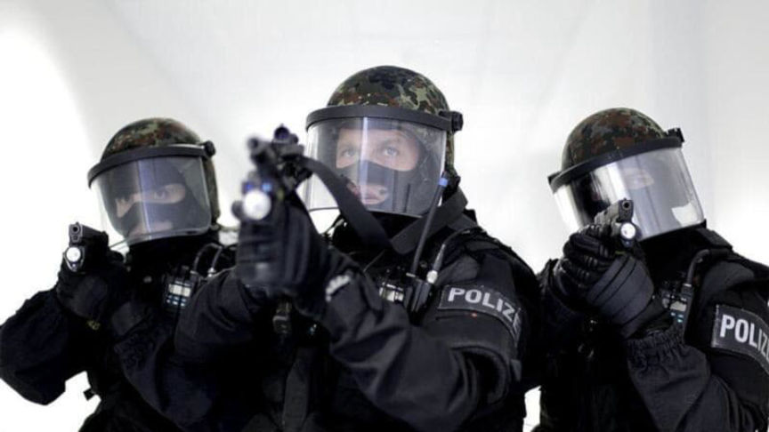
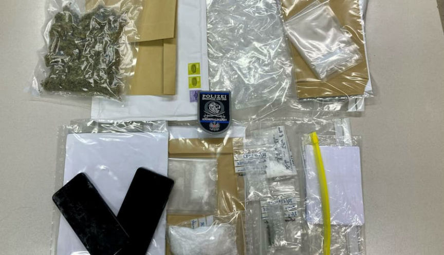
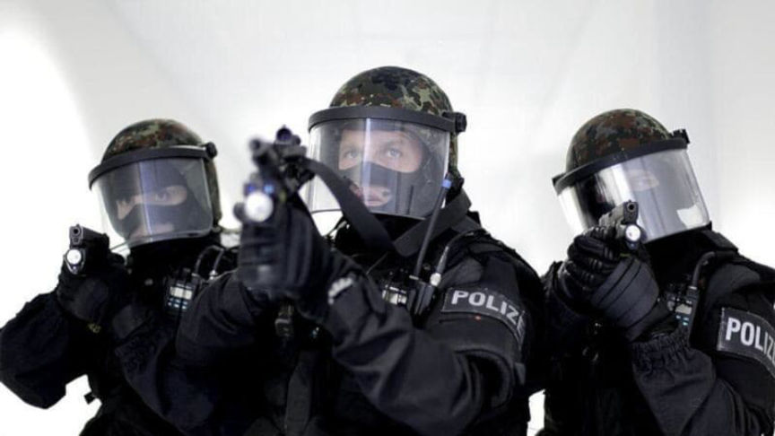
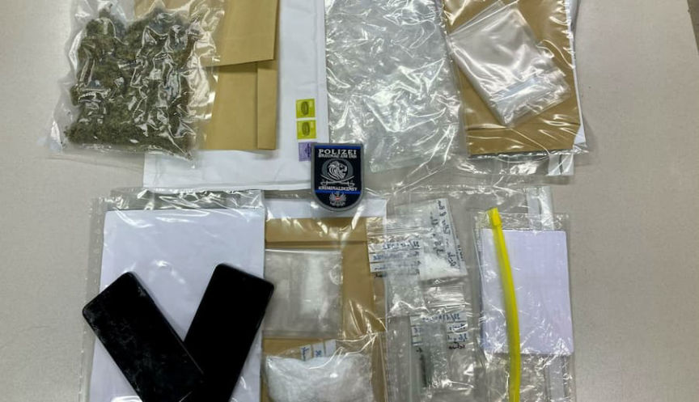

Austrian Police Arrest a New Darkweb Vendor
~2 min read | Published on 2022-09-05, tagged Arrested, Darkweb-Vendor using 287 words.
Police in Braunau, Upper Austria, caught a darkweb drug dealer during a so-called “routine search.”
Police at the train station in Braunau carried out routine “identity checks” on September 1, 2022. During the checks, police noticed a suspicious 25-year-old. While searching the man’s backpack, police found “a significant amount of synthetic drugs in his backpack, pre-packaged in dark web drug packages.”
The suspect then tried to prevent the police officers from seizing the packages of drugs through physical resistance. After officers threatened the suspect with arrest, the 25-year-old fled the train station. Officers followed him to a residential area, where they apprehended him.

During the ensuing investigation, police learned that the suspect was on his way to mail packages to drug buyers throughout Austria at the time of his arrest. “By evaluating the data carriers and shipping materials that had been seized, it became known that the arrested person had already been active as a Darknet vendor for several months,” according to a press release from Austrian police. During that time, the man had allegedly sold more than half a kilogram of various drugs, including cocaine, amphetamine, and marijuana.

Police learned that the suspect imported the drugs into Austria and repackaged them for resale. “Under the guise of writing resumes, he used printers from a service company to create the necessary shipping labels and minimize private Internet use,” police said.
Police seized 124 grams of amphetamine and 64 grams of marijuana during the investigation. They also found “shipping notes, sales lists and packaging material.” According to the press release, “various buyers in different cities in Austria could be identified.”
The defendant was taken to the Ried im Innkreis prison on suspicion of drug trafficking.
Festnahme eines Darknet-Vendors | www.polizei.gv.at, archive.is, archive.org
Police at the train station in Braunau carried out routine “identity checks” on September 1, 2022. During the checks, police noticed a suspicious 25-year-old. While searching the man’s backpack, police found “a significant amount of synthetic drugs in his backpack, pre-packaged in dark web drug packages.”
The suspect then tried to prevent the police officers from seizing the packages of drugs through physical resistance. After officers threatened the suspect with arrest, the 25-year-old fled the train station. Officers followed him to a residential area, where they apprehended him.

G18, ???, G18
During the ensuing investigation, police learned that the suspect was on his way to mail packages to drug buyers throughout Austria at the time of his arrest. “By evaluating the data carriers and shipping materials that had been seized, it became known that the arrested person had already been active as a Darknet vendor for several months,” according to a press release from Austrian police. During that time, the man had allegedly sold more than half a kilogram of various drugs, including cocaine, amphetamine, and marijuana.

Seized property
Police learned that the suspect imported the drugs into Austria and repackaged them for resale. “Under the guise of writing resumes, he used printers from a service company to create the necessary shipping labels and minimize private Internet use,” police said.
Police seized 124 grams of amphetamine and 64 grams of marijuana during the investigation. They also found “shipping notes, sales lists and packaging material.” According to the press release, “various buyers in different cities in Austria could be identified.”
The defendant was taken to the Ried im Innkreis prison on suspicion of drug trafficking.
Festnahme eines Darknet-Vendors | www.polizei.gv.at, archive.is, archive.org